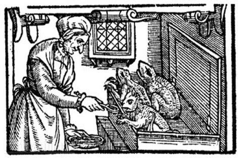

The Damned Story: When she was alive, Hannah Cranna was known as “The Wicked Witch of Monroe,” a reputation that continues to follow her over 150 years after her death. Unlike other supposed witches, the story of Hannah Hovey — who apparently picked up the nickname Hannah Cranna while she was still alive — doesn’t culminate at the end of a hangman’s noose or in ashes around a stake. She lived a fairly comfortable life on her property near Cutler’s Farm Road in Monroe, dying of natural causes at the age of 77. (Hmm … isn’t 7 supposed to be a magical number? Just sayin’.) But obviously, her life wasn’t exactly ordinary, or she wouldn’t have be known to this day for allegedly dabbling in the black arts. According to most accounts, her reputation as a witch didn’t begin until the demise of her husband, the good Capt. Joseph Hovey, an event with which Hannah was rumored to have somehow been involved. The tale goes that one night, Capt. Hovey went out for a simple walk and somehow toppled over a cliff, resulting in his untimely demise. Not believing that Capt. Hovey could’ve been the victim of an unfortunate accident, whispers started that Hannah had somehow bewitched him, causing him to become so dazed and confused he inadvertently fell to his death. Hannah — whose shrewish behavior apparently hadn’t exactly endeared her to others while Capt. Hovey was alive — became even more loathesome after she became a widow. She often insisted that her neighbors give her free food and firewood, and if they didn’t immediately comply, she relied on her witchy reputation to threaten them. When one local farmer’s wife allegedly tried to deny her a fresh-baked pie, Hannah “cursed” her, so the story goes, and the poor woman was never able to bake again.
Another story tells of how after catching a man fishing for trout in a brook on her property without her permission, Hannah laid a curse on him and he never caught another fish. Over the years, other such incidents demonstrating her otherworldly prowess supposedly occurred, solidifying her infamy with — and power over — the locals. From her house on Craig Hill (allegedly guarded by snakes), she helped those who venerated her and poured down misery on those who crossed her. Ultimately, it was her demise — and the odd events surrounding her burial — that truly cemented her legend. It seems that Hannah kept a rooster named “Old Boreas,” which some suspected was her “familiar.” Shortly after the cock crowed its last, Hannah told a neighbor that her end was also near. “My coffin must be carried by hand to the graveyard,” she instructed. “And I must not be buried before sundown.” Hannah Cranna died the next day.
As it was a snowing heavily, the locals decided that rather than follow her instructions, it would be easier to pull her casket across the snow on a sled. But as the procession started toward the cemetery, the coffin came off the sled and slid all the way back to her front door. They tried again, but met with more trouble. Rather than further incur the supernatural wrath of Hannah, they decided to just carry her to the graveyard. After much struggling, they eventually got the old witch into her grave, just after sunset. Happy to finally be rid of her, they returned to Hannah’s home, only to discover it completely engulfed in flames. Obviously, that only served to burn Hannah Cranna, “The Wicked Witch of Monroe,” into their minds forever. Like with any good legend, there are stories that still revolve around her today, the most popular of which is that from time to time, the spectre of a mysterious woman will suddenly appear in the middle of Spring Hill Road, causing an unfortunate driver to swerve, lose control of his car — and eventually his life — as he crashes into the gravestone of Hannah Cranna. Of course, Hannah’s gravestone is up on the hill overlooking the road and would require a spectacular aerial crash that would put Evel Knievel to shame, but why let that get in the way of a good urban legend, right?
As you might expect, David Phillips recounts the tale of Hannah Cranna in more detail in his Legendary Connecticut. hanna_crannaOur Damned Experience: We visited Gregory’s Four Corners Burial Ground on a rainy Sunday morning in September 2009. As with the Old Leather Man, Hannah’s grave was ridiculously easy to find — right on the hillside in the front of the cemetery, overlooking the road and bright white. (If this is the original stone, it’s in amazing condition for being 150 years old!) Interestingly, it’s actually marked “HANNAH CRANNA” as opposed to Hannah Hovey — an early proponent for women’s rights? From the stories recorded about her, it seems as though she was a strong-willed woman who was not to be trifled with, and apparently that went for her husband as well. As with many older cemeteries, the burial ground is not a very big parcel of land, and the majority of stones appear to be in their original condition — inscriptions worn, stones faded or toppled.
We didn’t see any unusual figures standing in the road, nor any spectral mists or apparations — not even so much as an orb. Then again, we haven’t crossed Hannah, so maybe she has no business with us Yet.
If You Go: Gregory’s Four Corners Burial Ground is located on Spring Hill Road in Trumbull, right on the border with Monroe. It is near the junction of routes 111 and 25. As mentioned, Hannah Cranna’s white gravestone is right at the front of the cemetery, very close to the street. It is open to the public, but like with any cemetery, we always suggest you be respectful during your visit. There’s no formal entrance or parking area, the road is a bit busy, so be careful where you leave your vehicle.